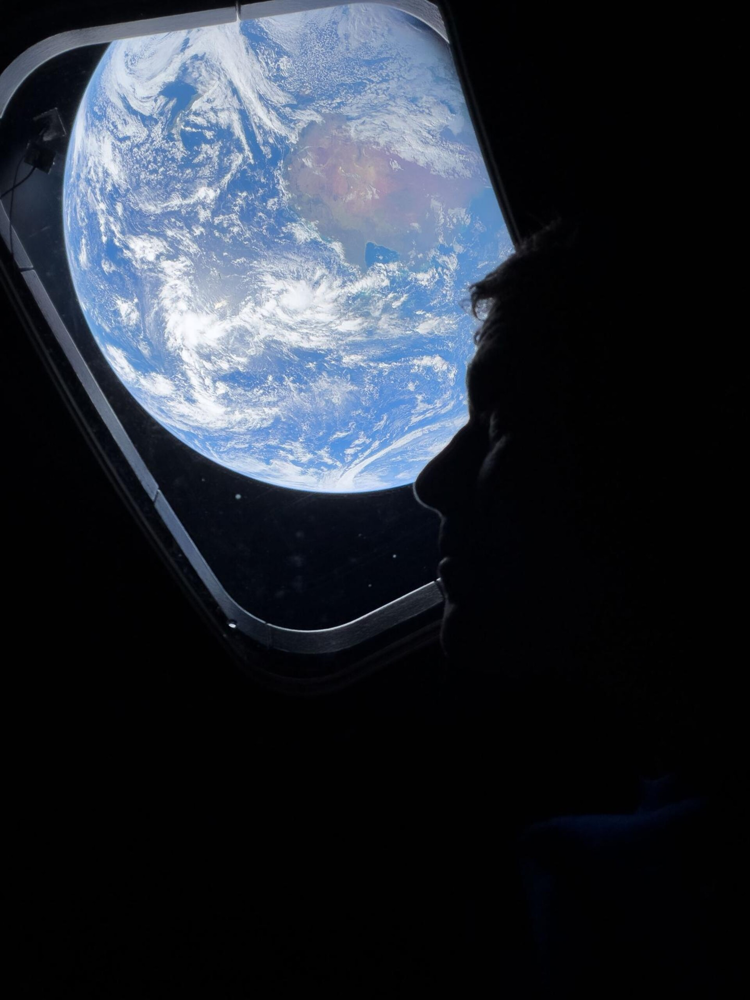
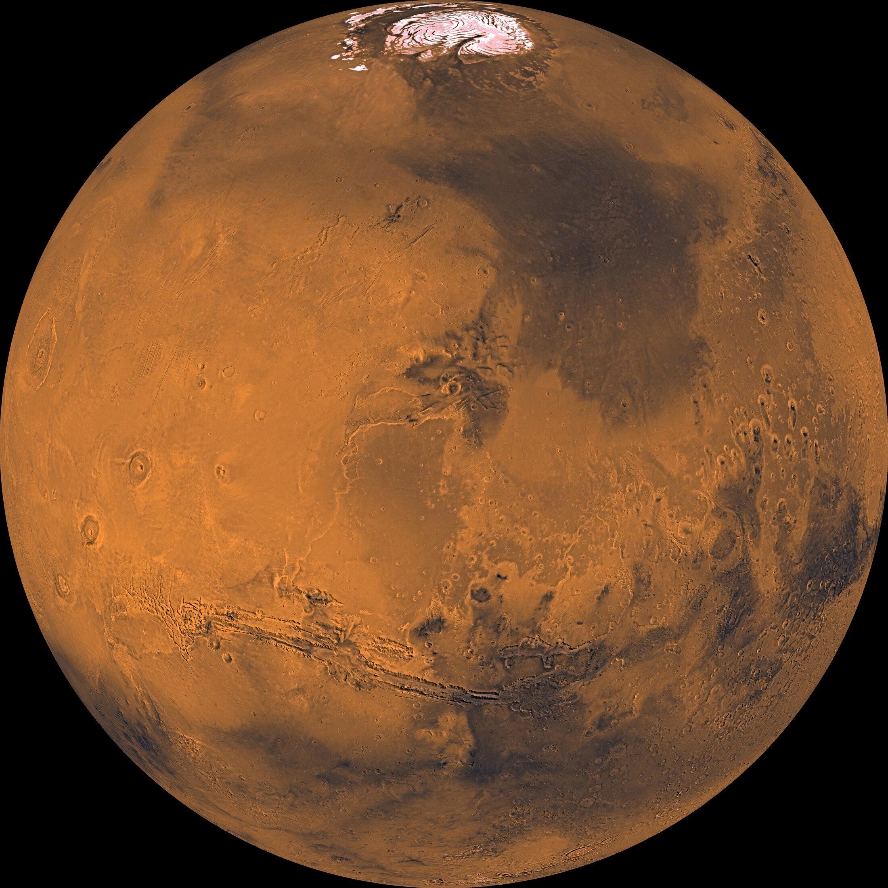
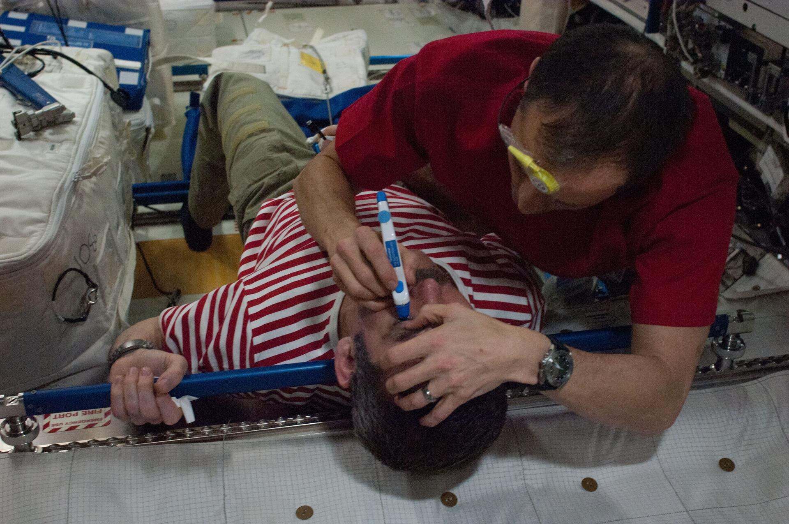
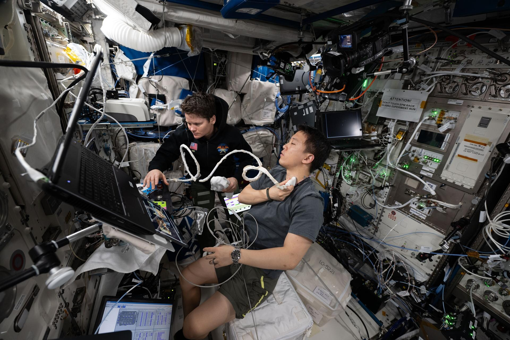
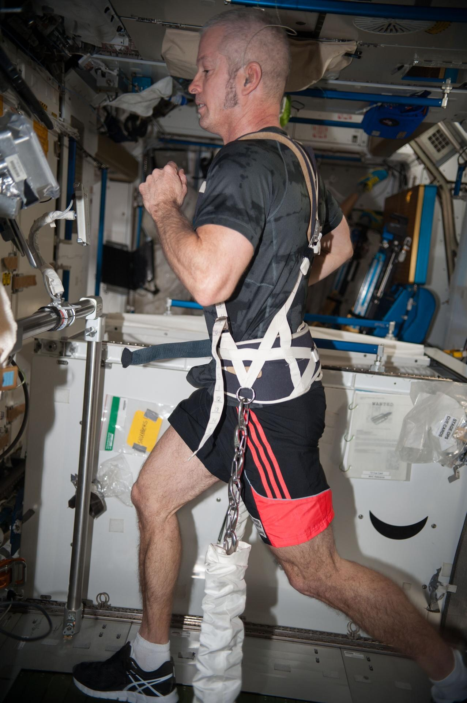

ARTEMIS II · ABRIL 2026
CuatrohumanosacabanderodearlaLuna.
Próximaparada:Marte.
FOTO · NASA / ARTEMIS II
TIERRA → MARTE · DISTANCIA MEDIA
0
Elmédicomáscercanosequedaatrás.
Cadamensajetardahasta22minutos.Solodeida.
Lasmisioneslargascambianelcuerpo.

OJOSLa visión cambia

CORAZÓNPierde forma

HUESO−1,5 % / mes
NASA · LOS CINCO PELIGROS DEL VUELO ESPACIAL HUMANO
RADIACIÓNAISLAMIENTO Y CONFINAMIENTODISTANCIA DE LA TIERRACAMPOS DE GRAVEDADENTORNOS HOSTILES
Ylatripulacióntienequedetectarlosola.
FOTOS · NASA / ISS
Unwearable.Todaslasseñales.
NOVA
Un sistema de salud para la tripulación con una IA que vive a bordo
NOVA PC · CAPTURA REAL
Veelcuerpo.
Guíalasmanos.
ESCÁNER · CÁMARA DEL TELÉFONO · VISIÓN EN LA NAVE
VIDEO DE RCP · PRIMEROSAUXILIOS · CC BY-SA 3.0 · WIKIMEDIA COMMONS
Reanimaciónparacadagravedad.
MARTE · 0,38 G
MICROGRAVEDAD · 0 G
GUÍA · DGLRM/ESAM 2020 · SRIHARAN 2021
VIDEO DE RCP · PRIMEROSAUXILIOS · CC BY-SA 3.0 · WIKIMEDIA COMMONS
NOVA PC · CAPTURA REAL
NOVA PC · CAPTURA REAL
NOVA PC · CAPTURA REAL
Piensaabordo.SinesperaralaTierra.
ConstruidasobrelacienciadelaNASA.
Human Research ProgramLos cinco peligros del vuelo espacial y la evidencia detrás de cada riesgo para la salud.
NASA Twins StudyUn año en el espacio, comparado con un gemelo idéntico en la Tierra.
MSL Radiation Assessment DetectorRadiación medida camino a Marte: cerca de 1,8 mSv al día.
NASA Open Science Data RepositoryDatos abiertos de biología y salud espacial para entrenar y probar modelos.
NASA DONKIClima espacial en vivo: fulguraciones y eventos de partículas para alertar tormentas.
NASA-STD-3001El estándar de salud de tripulaciones de la NASA: límites de exposición y atención médica.
NOVA
Saludqueviajacontigo.
Equipo B&N · NASA Space Apps Challenge 2026 · Santiago, Chile